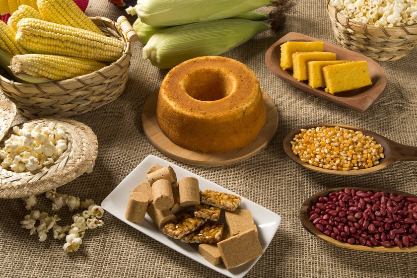

Pernambuco
Caruaru
Autor
Bruna Ditrich
Sou formada em Administração, atuo na área financeira como analista há mais de 10 anos, e atualmente estou estudando para realizar a migração de carreira para área da Tecnologia. Adoro viajar e conhecer lugares remotos do Brasil.
Caruaru: a Capital do Forró e da diversidade culinária!
Caruaru é conhecida como a capital do Forró e também é famosa por sua rica tradição culinária. A cidade oferece uma variedade de pratos deliciosos e sabores únicos, que refletem a cultura nordestina.
Principais destaques da culinária de Caruaru:
Um dos pratos típicos da região, é a carne é salgada e seca ao sol, também conhecida como Carne de Sol, resultando em uma textura e sabor únicos. Você pode encontrar restaurantes que servem carne de sol acompanhada de queijo coalho, mandioca, feijão verde, paçoca de carne e outras iguarias locais..
Outras peculiaridades gastronômicas:
Outro prato tradicional é a buchada de bode, feita com as vísceras do animal, temperadas com diversos condimentos e cozidas. Apesar de ser um prato um pouco mais ousado para alguns paladares, é bastante apreciado pelos amantes da gastronomia regional.
Além disso, a cidade é conhecida por suas comidas de rua. Durante a famosa festa de São João, que ocorre em junho, é comum encontrar barracas que vendem milho assado, canjica, pamonha e pé de moleque. Essas iguarias são apreciadas por moradores e turistas.
Caruaru também possui uma diversidade de restaurantes que oferecem culinárias variadas, desde pratos típicos nordestinos até opções da culinária internacional.
Em resumo, o turismo gastronômico em Caruaru oferece uma oportunidade para experimentar pratos típicos do Nordeste brasileiro e mergulhar na cultura local.
Outras curiosidades sobre a cidade:
Além da comida, Caruaru é conhecida por seu Mercado de Artesanato, onde você pode encontrar produtos típicos da região, como rendas, bordados, esculturas e cerâmicas. Representada pelo Mestre Vitalino Pereira dos Santos (1909-1963), que foi um renomado artesão e ceramista, reconhecido como um dos maiores representantes da arte popular nordestina. Suas obras são conhecidas pela riqueza de detalhes e pela representação da vida e da cultura do sertão nordestino, onde retratava cenas cotidianas, como vaqueiros, agricultores, danças populares, festas e animais típicos da região. Suas esculturas são marcadas pela simplicidade e pela autenticidade, transmitindo a essência da cultura popular. Mestre Vitalino foi um dos primeiros ceramistas a se estabelecer no Alto do Moura, transformando a região em um polo de criação artística. Ele construiu sua casa e seu ateliê no bairro, onde criou suas esculturas e recebeu visitantes interessados em conhecer seu trabalho. Hoje é um dos bairros mais visitados em Caruaru.
A melhor época para viajar para Caruaru depende do que você busca em sua viagem. Se você deseja aproveitar a famosa festa de São João, que é uma das maiores festas populares da região Nordeste, recomenda-se visitar Caruaru durante o mês de junho. Durante esse período, a cidade ganha vida com apresentações musicais, quadrilhas, comidas típicas e uma atmosfera festiva. Além do São João, Caruaru também oferece outros eventos culturais ao longo do ano, como o Festival de Inverno, em julho, que traz atrações musicais e artísticas para a cidade. Caruaru possui uma variedade de opções de hotéis, pousadas e hospedagens alternativas para atender diferentes orçamentos e preferências. A região central da cidade é uma boa opção para quem deseja estar próximo das principais atrações, como o Mercado de Artesanato e o Alto do Moura. Há também hotéis localizados em áreas mais tranquilas e afastadas do centro, oferecendo um ambiente mais relaxante. É recomendável verificar as opções de hospedagem com antecedência e considerar fatores como localização, comodidades, avaliações de outros viajantes e, é claro, o preço.